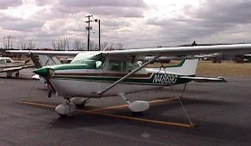
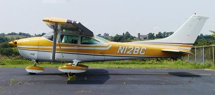

About Us

The Central Ohio Flyers Association
was formed in 1966 and is incorporated as C.O.F.A., Inc.
under the laws of the State of Ohio. We are an ownership based flying club.
That's right, we own all of our aircraft. so you won't be left without your favorite bird because
the ownership decided to end a leaseback. Our membership ranges
from beginning students to CFIIs and from newly rated instrument pilots to ATPs with years of experience.

Club ByLaws
While you consider the advantages of becoming a COFA member,
we ask that you please read through our ByLaws .
We will be happy to answer any questions you may have.
Goto ByLaw
A few frequently asked questions:
Membership Cost
There is a one time fee of $2,000 which purchases shared ownership in both aircraft.
This fee is 100% refundable after one year of membership should you decide to resign.
Lesser amounts are refunded based on time and circumstance.
Additionally, there are monthly dues, "dry time charges" for hours flown and fuel costs..
Hourly Flying Rates
COFA's unique approach to hourly flying rates is based on separate wet and dry charges.
Dry charges are competitive rates and relate to fixed expenses such as maintenance, parts, insurance
and hangar fees. Wet charges are for fuel used and are based on the following hourly burn rates:
The dry charges are based on the cost associated with hourly operation of the aircraft with portions of
each being set aside for engine overhauls and other related hourly operating costs.
Cessna 172 - 9 GPH
Cessna 182 - 14 GPH
But here's the kicker - time flown is based on Tach time, not on Hobbs time.
This can save you 10% or more! Especially when you consider taxi and hold time at large airports.
You are not penalized by the clock when the engine is at low idle.
In addition we have a program called KATS - Keep All The Savings.
KATS allows the member to save even more on wet charges.
For 12BC KATS is only offered for 100LL fuel.
For billing purposes, the hourly burn rates mentioned above are translated into a wet rate based
on the current cost of fuel at OSU airport.
However, if you fuel the aircraft elsewhere and realize a savings over OSU's prices (not hard to do...)
you subtract the difference and Keep All The Savings.
Just one more way we try to save the member money! Saving money - a nice bonus, wouldn't you say?
Aircraft Maintenance
COFA believes in "safety first" and our maintenance is proactive, not reactive. This is perhaps one of the major things which sets the club apart from rental organizations. There is no checking with the owner for maintenance approval because we are the owners! We conduct 100 hour inspections on all of our aircraft in addition to the annual inspection. While we do keep the usual "squawk" sheets, each plane is also tended to by its own plane captain who is responsible for its overall condition. When an aircraft needs repair, it is fixed right away, not put off until absolutely necessary to save a few pennies. COFA has established accounts with reliable reasonably priced A&P and avionics repair facilities to keep all of our aircraft in a great shape.
Not a Pilot? No Problem
In fact, COFA membership is a smart alternative to renting or purchasing an aircraft
for your primary training. Our Cessna 172 is great for primary students or to get that instrument
rating and you won't outgrow them like a C150 or other small trainer. You are also not on your own,
learning about aircraft ownership the hard way. When you are ready to move up to a high performance craft,
the C182 will be waiting for you in the same quality organization.
You don't have to fund the purchase of a new plane just because your needs have changed.
And if you just feel like going out and exercising your wings in the pattern,
you aren't forced to fly your high cost "cross country" aircraft, either.